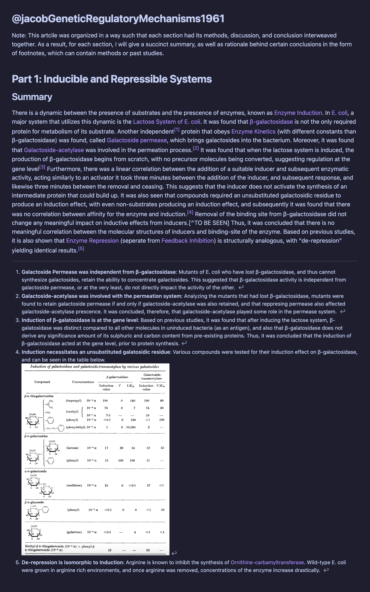

The following is the note I created for this article on Obsidian. It only contains the first part, as I decided that taking notes on the rest of the paper was not a good use of time, as it is more so presenting/teaching a topic (similar to a review article) rather than presenting experimental procedures and major findings. The notes I took for the first third of the article can be seen below.
